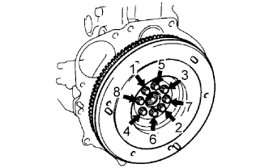
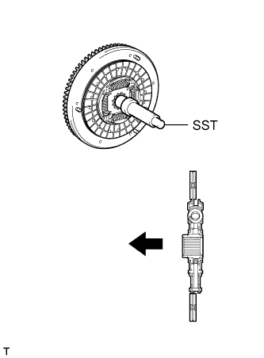
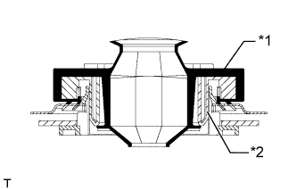
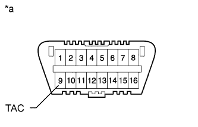

ДВИГАТЕЛЬ В СБОРЕ > УСТАНОВКА |
| 1. INSTALL FRONT ENGINE MOUNTING INSULATOR |
Install the 2 front engine mounting insulators with the 2 nuts.
| 2. INSTALL ENGINE HANGER |
 |
Install an engine hanger to each location shown in the illustration.
| *1 | No. 1 Engine Hanger |
| *2 | No. 2 Engine Hanger |
| No. 1 Engine Hanger | 12281-54080 |
| No. 2 Engine Hanger | 12282-54070 |
| Bolt (No. 1 Engine Hanger) | 90119-10736 |
| Bolt (No. 2 Engine Hanger) | 91622-61022 |
| 3. REMOVE ENGINE FROM ENGINE STAND |
Attach an engine sling device and hang the engine with a chain block.
Lift the engine and remove it from the engine stand.
| 4. INSTALL ENGINE ASSEMBLY |
Slowly lower the engine into the engine compartment.
Install the engine with the 4 bolts and 4 nuts.
 |
| *1 | Claw (Stopper) |
| *2 | Bracket |
| *a | Correct |
| *b | Incorrect |
Remove the 2 bolts and 2 engine hangers.
| 5. INSTALL FLYWHEEL HOUSING DUST SEAL |
| 6. INSTALL REAR END PLATE |
Install the rear end plate with the 2 bolts.
| 7. INSTALL FLYWHEEL SUB-ASSEMBLY |
 |
Using SST, hold the crankshaft.
Clean the bolts and bolt holes.
Apply adhesive to 2 or 3 threads of each of the bolts.
Install the flywheel to the crankshaft.
Temporarily install the flywheel with the 8 bolts.
|  |
Tighten the 8 bolts uniformly in several steps in the order shown in the illustration.
| 8. INSTALL CLUTCH DISC ASSEMBLY |
|  |
Insert SST into the clutch disc. Then insert SST (together with the clutch disc) into the flywheel to install the clutch disc.
 | Flywheel Side |
| 9. INSTALL CLUTCH COVER ASSEMBLY |
 |
Align the matchmarks on the clutch cover and flywheel.
| *a | Matchmark |
Tighten the 6 bolts uniformly in the order shown in the illustration, starting with the bolt located near the knock pin on the top.
| 10. INSTALL REAR NO. 1 ENGINE MOUNTING INSULATOR |
Install the rear engine mounting insulator to the transmission with the 4 bolts.
| 11. INSTALL MANUAL TRANSMISSION ASSEMBLY |
Install the manual transmission (See page Нажмите здесь).
| 12. INSTALL PROPELLER SHAFT ASSEMBLY |
Совместите метки на фланце карданного вала и фланце дифференциала.
Установите карданный вал в сборе и закрепите его 4 болтами, 4 шайбами и 4 гайками.
Нанесите метки на фланец карданного вала и фланец раздаточной коробки.
Закрепите карданный вал в сборе с помощью 4 шайб и 4 гаек.
| 13. INSTALL FRONT PROPELLER SHAFT ASSEMBLY |
Совместите метки на вилке и фланце дифференциала.
Установите карданный вал в сборе и закрепите его 4 болтами, 4 шайбами и 4 гайками.
Совместите метки на вилке и фланце раздаточной коробки.
Закрепите карданный вал в сборе с помощью 4 шайб и 4 гаек.
| 14. INSTALL FRONT EXHAUST PIPE ASSEMBLY |
Install a new gasket and the front exhaust pipe to the exhaust manifold with 3 new nuts.
Install the No. 1 exhaust pipe support bracket with the 2 bolts.
Install the clamp with the bolt.
| 15. INSTALL OIL FILTER SUB-ASSEMBLY |
Check and clean the oil filter installation surface.
Apply clean engine oil to the gasket of a new oil filter.
Install the oil filter and tighten it by hand until the gasket contacts the installation surface.
Using SST, tighten the oil filter. Choose from the following to further tighten the oil filter.
Using a torque wrench, tighten the oil filter.
Tighten the oil filter a 3/4 turn by hand or with a common wrench.
 | 3/4 turn |
| 16. INSTALL STARTER ASSEMBLY |
Install the starter with the 2 bolts and nut.
Connect the starter wire with the nut.
Install the terminal cap.
Connect the starter connector.
| 17. CONNECT CLUTCH RELEASE CYLINDER ASSEMBLY |
Connect the release cylinder with the 2 bolts.
| 18. INSTALL VANE PUMP ASSEMBLY |
Temporarily install the vane pump with the 2 bolts and nut.
Install the pulley to the pump shaft.
Using SST, hold the pulley and install the nut.
| 19. CONNECT FUEL HOSE |
Connect the 2 fuel hoses.
| 20. CONNECT HEATER WATER HOSE ASSEMBLY |
Connect the 2 water hoses.
Install the heater water hose clamp with the bolt.
| 21. INSTALL WIRING HARNESS CLAMP BRACKET (for LHD) |
Install the wiring harness clamp bracket with the bolt.
| 22. CONNECT ENGINE WIRE |
Connect the ECM connector.
|  |
Attach the grommet to the wire harness support.
| *1 | Grommet |
| *2 | Wire Harness Support |
Pass the wire harness into the vehicle and install the wire harness support.
 |
Connect the 5 ECM connectors and attach the clamp.
| *A | for LHD |
| *B | for RHD |
 |
for LHD:
Connect the 4 wire harness clamps.
 |
Attach the 2 clamps and connect the connector.
Attach the 2 claws and install the nut.
Install the No. 1 relay block cover.
Attach the clamp and install the 3 bolts.
| 23. INSTALL GLOVE COMPARTMENT DOOR ASSEMBLY |
Install the glove compartment door (See page Нажмите здесь).
| 24. INSTALL GENERATOR ASSEMBLY |
Temporarily install the generator with the 2 bolts.
Connect the vacuum pump oil outlet hose.
Install 2 new gaskets and the vacuum pump oil inlet hose with the union bolt.
Connect the vacuum pump hose.
Attach the vacuum pump oil inlet hose to the cord clip.
Install the generator wire with the nut.
Install the terminal cap.
Connect the generator connector.
| 25. CONNECT COOLER COMPRESSOR ASSEMBLY |
 |
Temporarily install the cooler compressor with the 2 bolts.
Temporarily install the idle pulley bracket with the 4 bolts.
Tighten the 6 bolts in the sequence shown in the illustration.
Connect the wire harness with the bolt.
Connect the cooler compressor connector.
| 26. INSTALL INTAKE PIPE ASSEMBLY |
Install the intake pipe with the 2 bolts.
Tighten the intake pipe clamp.
| 27. INSTALL RADIATOR ASSEMBLY |
Insert the tabs of the radiator support into the radiator service holes.
Install the radiator with the 4 bolts.
| 28. INSTALL FAN SHROUD |
Install the fan pulley to the water pump.
Install the shroud together with the coupling fan between the radiator and engine.
Temporarily install the fluid coupling fan to the fan pulley with the 4 nuts. Tighten the nuts as much as possible by hand.
 |
Attach the claws of the shroud as shown in the illustration.
Install the shroud with the 2 bolts.
Install the fan and generator V belt and vane pump V belt (See page Нажмите здесь).
Tighten the 4 nuts of the fluid coupling fan.
| 29. INSTALL NO. 2 RADIATOR HOSE |
 |
Install the radiator hose.
| *a | Upper |
| *b | Front Side of Vehicle |
| *c | LH Side |
| *1 | Protrusion |
| *2 | Paint Mark |
| 30. INSTALL NO. 1 RADIATOR HOSE |
Install the hose clamp with the 2 nuts.
 |
Install the radiator hose.
| *a | Upper |
| *b | RH Side |
| 31. INSTALL RADIATOR SIDE DEFLECTOR RH |
Attach the 3 claws.
Install the deflector with the clip.
| 32. INSTALL RADIATOR SIDE DEFLECTOR LH |
Attach the 3 claws.
Install the deflector with the clip.
| 33. INSTALL UPPER FRONT BUMPER RETAINER |
Install the upper retainer with the 3 bolts.
| 34. INSTALL FRONT BUMPER COVER |
Для моделей с сенсорной системой помощи при парковке TOYOTA и противотуманными фарами:
Подсоедините 3 разъема.
Для моделей с сенсорной системой помощи при парковке TOYOTA без противотуманных фар:
Подсоедините 2 разъема.
Для моделей без сенсорной системы помощи при парковке TOYOTA и с противотуманными фарами:
Подсоедините разъем.
Для моделей с системой очистителей фар:
Подсоедините шланг очистителя фар.
Закрепите 12 захватов, чтобы установить накладку переднего бампера.
Вверните 2 болта A, 2 болта B, 6 винтов и 6 фиксаторов.

| *1 | Болт A | *2 | Болт B |
| 35. INSTALL AIR CLEANER CASE ASSEMBLY |
Install the air cleaner case with the 3 bolts.
| 36. INSTALL AIR CLEANER FILTER ELEMENT SUB-ASSEMBLY |
| 37. INSTALL RESONATOR WITH AIR CLEANER CAP SUB-ASSEMBLY |
Вставьте петли крышки воздушного фильтра и шланг в корпус воздушного фильтра, а затем закрепите 4 откидных защелки.
Установите крышку воздушного фильтра и закрепите ее зажимом.
Закрепите зажим жгута проводов.
Подсоедините 2 зажима и разъем.
| 38. INSTALL NO. 1 FRONT FENDER APRON TO FRAME SEAL LH |
Install the No. 1 front fender apron to frame seal with the 5 clips.
| 39. INSTALL FRONT FENDER APRON SEAL LH |
Install the front fender apron seal with the 5 clips.
| 40. INSTALL NO. 1 FRONT FENDER APRON TO FRAME SEAL RH |
Install the No. 1 front fender apron to frame seal with the 5 clips.
| 41. INSTALL FRONT FENDER APRON SEAL RH |
Install the front fender apron seal with the 4 clips.
| 42. INSTALL REAR ENGINE UNDER COVER ASSEMBLY |
Install the rear engine under cover with the 4 bolts.
| 43. INSTALL TRANSMISSION UNDER COVER |
Install the transmission under cover with the 2 bolts.
| 44. INSTALL NO. 1 ENGINE UNDER COVER SUB-ASSEMBLY |
 |
Hook the engine under cover to the vehicle body as shown in the illustration.
Install the 4 bolts.
| 45. INSTALL FRONT BUMPER COVER LOWER |
Install the front bumper cover lower with the 5 bolts and clip.
| 46. INSTALL UPPER RADIATOR SUPPORT SEAL |
Установите верхнее уплотнение кронштейна радиатора и закрепите его 13 фиксаторами.
| 47. INSTALL COWL TOP VENTILATOR LOUVER SUB-ASSEMBLY |
Install the cowl top ventilator louver (See page Нажмите здесь).
| 48. INSTALL HOOD SUB-ASSEMBLY |
 |
Install the hood with the 8 bolts.
| Bolt A |
| Bolt B |
Connect the washer nozzle hose.
| 49. ADJUST HOOD SUB-ASSEMBLY |
Отрегулируйте положение капота.
 |
Ослабьте 4 болта петель капота.
Для регулировки зазора между капотом и передним крылом подвиньте капот.
Затяните 4 болта петель капота.
Отрегулируйте высоту передней части капота с помощью резиновых амортизаторов.
 |
Отрегулируйте 2 резиновых амортизатора таким образом, чтобы капот и крыло оказались на одном уровне.
Отрегулируйте замок капота.
Ослабьте 3 болта.
Отрегулируйте замок капота и затяните 3 болта.
Убедитесь, что защелка плавно входит в зацепление с замком капота.
| 50. INSTALL BATTERY TRAY |
| 51. INSTALL BATTERY |
| 52. INSTALL BATTERY HOLD DOWN CLAMP |
Install the battery hold down clamp with the 2 nuts.
Connect the engine wire with the nut labeled A.
| 53. CONNECT CABLE TO NEGATIVE BATTERY TERMINAL |
| 54. ADD ENGINE OIL |
Add fresh engine oil.
| Oil Grade | Oil Viscosity (SAE) |
| API CF-4 or CF | 10W-30 |
| Item | Specified Condition |
| Drain and refill without oil filter change | 6.0 liters (6.3 US qts, 5.3 Imp. qts) |
| Drain and refill with oil filter change | 6.9 liters (7.3 US qts, 6.1 Imp. qts) |
| Dry fill | 7.6 liters (8.0 US qts, 6.7 Imp. qts) |
Install the oil filler cap.
| 55. ADD ENGINE COOLANT |
Затяните пробку сливного крана радиатора вручную.
Затяните пробку сливного крана блока цилиндров.
Медленно заполните систему охлаждающей жидкостью двигателя.
Медленно залейте охлаждающую жидкость в расширительный бачок радиатора до отметки "FULL".
Установите пробку расширительного бачка.
Несколько раз сожмите рукой патрубки радиатора № 1 и № 2, а затем проверьте уровень охлаждающей жидкости. Если уровень охлаждающей жидкости недостаточен, добавьте жидкость.
Установите на место пробку радиатора.
Запустите двигатель и прогрейте его до открывания термостата.
Поддерживайте частоту вращения коленчатого вала двигателя 2000–2500 об/мин.
Несколько раз сожмите патрубки радиатора № 1 и № 2 рукой, чтобы удалить воздух.
Остановите двигатель и подождите, пока охлаждающая жидкость остынет до температуры окружающего воздуха.
Убедитесь, что уровень охлаждающей жидкости находится между отметками "LOW" и "FULL".
Если уровень охлаждающей жидкости ниже линии "Low", повторите все вышеперечисленные действия.
Если уровень охлаждающей жидкости выше уровня "FULL", слейте охлаждающую жидкость до уровня между отметками "FULL" и "LOW".
| 56. TIGHTEN FUEL TANK CAP ASSEMBLY |
| 57. BLEED AIR FROM FUEL SYSTEM |
 |
Using the hand pump mounted on the fuel filter cap, bleed the air from the fuel system. Continue pumping until the pump resistance increases.
| 58. INSPECT FOR FUEL LEAK |
Check that there are no fuel leaks anywhere in the fuel system after performing maintenance.
| 59. INSPECT FOR ENGINE OIL LEAK |
Start the engine. Make sure that there are no oil leaks from the areas that were worked on.
| 60. INSPECT FOR COOLANT LEAK |
Fill the radiator with coolant and attach a radiator cap tester to the radiator.
Warm up the engine.
Using a radiator cap tester, increase the pressure inside the radiator to 123 kPa (1.3 kgf/cm2, 18 psi), and check that the pressure does not drop.
If the pressure drops, check the hoses, radiator or water pump for leaks. If no external leaks are found, check the heater core, cylinder block, and cylinder head.
| 61. ADD MANUAL TRANSMISSION OIL |
| 62. INSPECT FOR GAS LEAK |
| 63. INSPECT ENGINE IDLE SPEED |
Warm up the engine.
When using the intelligent tester:
Connect the intelligent tester to the DLC3.
|  |
When not using an intelligent tester:
Using SST, connect the tachometer test probe to terminal 9 (TAC) of the DLC3.
| *a | Front View of DLC3 |
| 64. INSPECT MAXIMUM ENGINE SPEED |
Start the engine.
Fully depress the accelerator pedal.
Check the maximum speed.